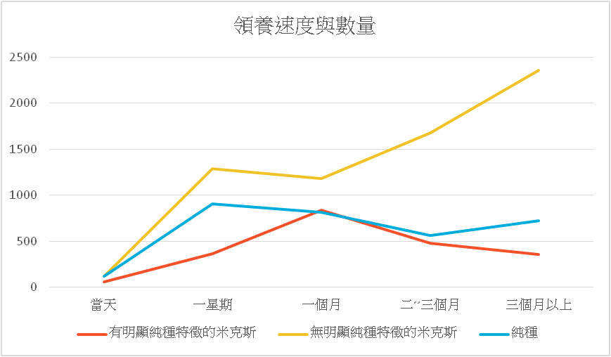
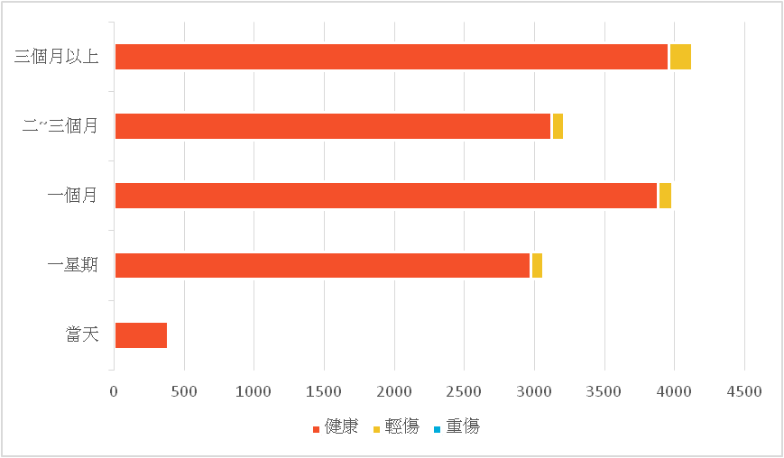

資料分析
▲根據Kaggle上的資料，我們可以看出在所有被收容的動物中，貓的比例是明顯高於狗的比例，而在這些動物中，大多數都是在三個月內能夠被領養，但仍有將近三成的動物會在收容所內待超過三個月都無人認領。
▲再進一步針對當天就會被領養、一星期內會被領養、一個月內會被領養、二～三個月內會被領養和三個月以上為領養來做分析。雖然說我們可以看到貓在各項的數量都高於狗，但這也是理所當然的，因為貓被收容的數量本身就大約是狗的兩倍。因此針對牠們在各自的占比來進行比較。
▲從上表結果可得知，在一星期內，貓是更容易被領養的，但到三個月以上都未被領養的話，明顯是狗更有機會發生這種情況。
品種 V.S. 領養速度
▼探討具有明顯純種特徵的動物和無此特徵的動物，兩者之間是否存在越像純種血統的寵物，或者是純種寵物，越容易被領養。

健康狀況 V.S. 領養速度

▲在Kaggle上的資料，對於動物的健康狀況分成健康、輕傷和重傷，而從資料中的敘述來看，他所謂輕傷大致上是可癒合的疾病或是受傷，而重傷是包含重大傷殘與精神疾病，比如說其中一筆在紀錄中的動物是有無法保持平衡的狀況。從上圖中可以看出，健康的動物大多在一星期至三個月間被領養走，而當天被領養走的動物則是以有輕傷的情況較多。可以看出民眾在領養動物時，基本上會優先選擇健康的動物，這可能的原因包括有重大傷殘或疾病的動物勢必會有環境上的需求或固定的醫藥費，除了健康的動物可以免去這筆支出外，有些許健康狀況的動物也會優先被選擇是因為這筆支出只是短期、暫時的，不會成為飼主的負擔。
疫苗、驅蟲和絕育對領養的影響
▲由上圖可以得知不管何時被領養的動物，基本上牠們在被領養前有無接種疫苗、驅蟲和絕育的情況，以有實施的比例來講，都是緩慢上升的，因此我們再分成三塊來看這三者的變化。
▲約700～1200，施打疫苗有無的比例越到後期越接近同等的比例。
▲約50～100，除蚤是100～800，因為是相較之下較便宜的費用，我們可以看到基本上越晚被領養的動物通常都已經做過驅蟲，再加上收容所基本上很多都是一起養，未除蟲的話可能也有機會會感染其他健康的動物，因此驅蟲的比例會較高。
▲由於絕育是筆較昂貴的費用，取決於體型與性別，基本上1000～5000之間，也有機會更貴，因此基本上在這份資料裡，未絕育的動物仍占多數，但已絕育的動物也有逐步上升。